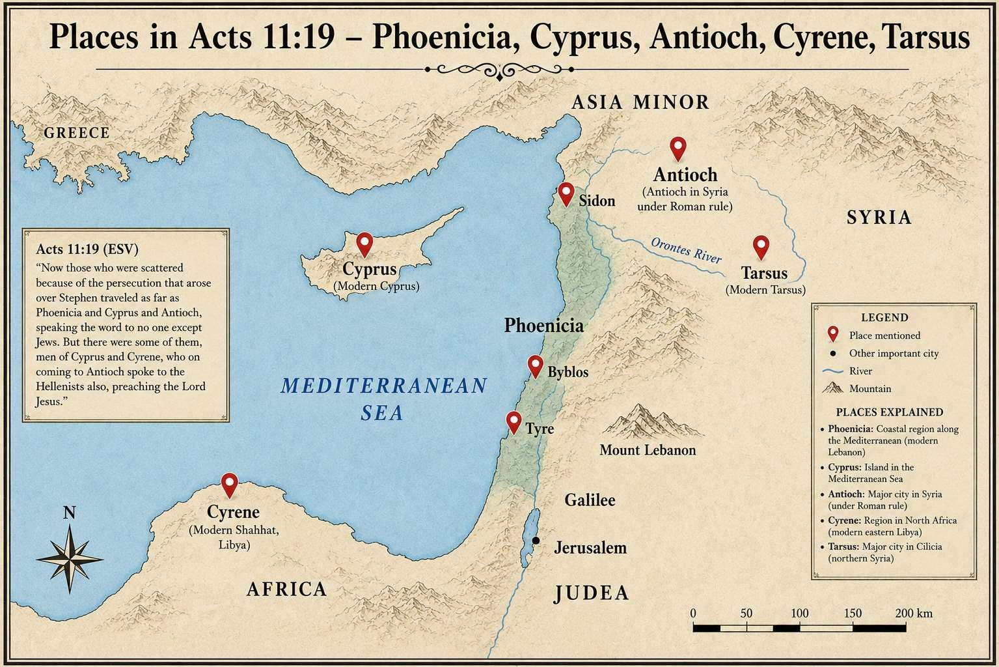

하나님께서 깨끗하게 하신 것을 네가 속되다 하지 말라. 사도행전 11:9
이번 성경공부는 사도행전 11장을 중심으로, 베드로가 이방인 백부장 고넬료의 집에 가서 복음을 전한 일을 예루살렘 교회에 해명하는 과정과, 복음이 핍박을 통해 예루살렘에서 안디옥으로 확장되어 가는 과정을 살펴보았다. 이방인에 대한 유대인의 문화적 편견, 하나님께서 환상을 세 번 보이시며 베드로를 교정하신 과정, 바나바와 사울의 안디옥 제자훈련 사역, 그리고 "그리스도인"이라는 명칭이 실제로 어디서 왔는지를 다루었다. 모임은 중국어와 영어로 번갈아 진행되었으며, LJM이 주강을 맡고 iPhone(통역자)이 중국어 통역과 보충 설명을, Dr가 질문을 통해 토론에 참여했다.
베드로, 예루살렘에 해명하다
10장에서 베드로는 이방인 백부장 고넬료의 집에 가서 복음을 전했고, 고넬료의 온 가족이 성령을 받고 구원을 얻었다 — 유대인은 이방인의 집에 들어가지 않았고 하물며 그들과 한 상에서 식사하는 것은 더더욱 없었으니, 이는 유대 관습에 대한 중대한 위반이었다. 베드로가 예루살렘에 돌아오자, 일부 "할례 받은 신자들"이 그가 무할례자의 집에 들어가 그들과 함께 먹었다고 비난했다. 이 반발은 하나님의 율법 자체가 아니라 오랫동안 쌓여 온 민족적 편견과 문화적 거리감에서 비롯된 것이었다: 모세 시대부터 다윗 시대에 이르기까지 유대인들은 혼인과 외부인과의 교제에 엄격한 경계를 세워 왔고, 그 경계는 차별로 굳어져 있었다. 그렇기에 고넬료의 집에서 일어난 일은 "획기적"이었다 — 성령이 이방인에게 임하신 것은 구원이 민족의 경계를 돌파했음을 뜻했고, 하나님의 계획이 온 인류를 향해 펼쳐지는 전환점이었다.
세 번의 환상, 베드로의 편견을 깨뜨리다
베드로가 욥바에서 기도하던 중, 큰 보자기가 하늘에서 내려와 정결한 짐승과 부정한 짐승이 함께 담겨 있는 환상을 보았고, "일어나 잡아 먹으라"는 음성이 들렸다. 베드로는 속되고 깨끗하지 아니한 것을 먹은 적이 없다며 거절했다. 그 음성은 9절에서 대답했다 — 본문의 가장 핵심적인 신학적 선언이다 — "하나님께서 깨끗하게 하신 것을 네가 속되다 하지 말라." 그 핵심은 사실 음식에 관한 것이 아니다. 하나님께서 이방인을 받아들이셨음을 선포하시는 것이며, 하나님께서 거룩하게 구별하신 것을 더 이상 "부정하다"고 불러서는 안 된다는 것이다. 유대 문화에서 "세 번"은 일곱 번과 마찬가지로 확실성과 완전성을 나타낸다 — 이는 우연이 아니라 하나님의 분명한 뜻이었으며, 베드로의 뿌리 깊은 선입견을 깨뜨리는 데 필요한 만큼 반복되었을 수도 있다. 베드로 역시 그 자리에서 곧바로 다 깨달은 것은 아니었다 — 지붕 위에서의 혼란에서 시작하여, 성령이 이방인에게 임하시는 것을 직접 목격하고서야 비로소 참뜻을 깨달았다. 레위기는 정결한 짐승과 부정한 짐승의 경계를 분명히 그었고 (예: 돼지고기는 되새김질하지 않으므로 부정한 것으로 분류됨), 유대 전통은 여기에 6천여 개의 규정을 더 쌓아 올렸다 — 베드로의 거부감은 바로 이 율법주의적 무게가 그 순간 드러난 것이었다.
편견에 대한 보편적 성찰
LJM은 이 질문을 우리 자신에게 돌리도록 이끌었다: 우리 각자의 문화적 맹점에서, 우리 마음속의 "이방인"이나 "부정한 사람"은 누구인가? 이는 바리새인이 예수님께 던진 "누가 내 이웃입니까"라는 질문과 같으며, 예수님은 선한 사마리아인의 비유로 답하셨다 — 사마리아인은 유대인의 눈에 바로 그 "접촉할 수 없는" 존재였다. 통역자는 구체적인 중국의 예를 들었다: 닝샤 인촨의 한족 그리스도인들이 회족(특히 중닝, 퉁신 등지의 회족)에 대해 "그들은 결코 믿지 않을 것"이라고 생각하는 경우가 있는데, 바로 이런 선입견적 판단이야말로 하나님의 교정이 필요한 대상이다. 이 모임의 원칙은: 평범한 사람이든 사회 엘리트든 수감 중인 사람이든, 모든 사람은 복음을 들을 자격이 있으며, 누구도 하나님의 구속 계획을 가로막는 존재가 되어서는 안 된다는 것이다. 그리고 이 교정은 외부인만을 위한 것이 아니다 — 진정으로 거듭난 신자라도 문화적 편견과 전해 받은 전통에 대해 하나님의 지속적인 교정이 여전히 필요할 수 있다.
베드로의 겸손과 증언 전략
초대교회에서 베드로는 이미 실질적인 권위를 지니고 있었다 — 오순절에 설교했고, 사도행전에서 여러 차례 중심적인 역할을 했다. 그는 그저 "이방인도 세례를 받을 수 있다"고 선언하고 끝낼 수도 있었다. 그러나 그는 예루살렘의 신자들에게 무슨 일이 있었는지 하나하나 인내심 있게 설명하는 길을 택했다 — 권력의 행사가 아니라 참된 겸손이었다. 구약 율법은 증인 두 사람만을 요구했지만, 베드로는 여섯 형제를 데리고 고넬료의 집에 갔다 — 이 일이 너무나 믿기 어려워 자신의 말만으로는 설득력이 없을 수 있었기에, 의도적으로 여유 있게 증인을 세운 것으로 볼 수 있다. 베드로는 권위를 지녔으면서도 받아들이라고 강요하는 대신 다른 사람들의 증언에 의지했다 — 지위가 아니라 설득으로 이끄는 지도자의 모범이다.
고넬료: 선한 사람에게도 구원이 필요하다
고넬료는 부유한 로마 백부장이었고, 성경은 그를 경건하고 하나님을 경외하며 관대하고 늘 기도하는 사람으로 묘사한다 — 겉으로 보기에 진실하게 하나님을 찾는 사람이었다. 바로 그 갈망과 인품 때문에 하나님은 천사를 보내 그를 베드로에게 인도하셨는데, 이는 하나님께서 사람의 마음을 살피시며 누가 구원을 받아들일 준비가 되었는지 아신다는 증거로 읽을 수 있다. 그러나 핵심 신학적 요점은 더 날카롭다: 기도 생활과 선행은 "좋은 조건"이었을 뿐 구원을 얻기에 충분한 것은 아니었다 — 종교적 배경, 도덕적 행실, 사회적 지위는 그리스도를 개인적으로 믿는 것을 대신할 수 없다. 이는 평범한 사람("나는 살인이나 방화를 저지른 적이 없다")뿐 아니라 철학자, 랍비, 철학이나 성경을 가르치는 학자에게도 똑같이 적용된다. 통역자는 이 원리를 중국 문화의 맥락으로도 확장했다: 노자, 장자처럼 성인으로 여겨지는 인물이나 진지한 불교 신앙인도 예외가 아니다 — 도덕적 행위와 철학적 지혜는 그리스도에 대한 개인적 믿음을 대신할 수 없다.
복음, 예루살렘에서 안디옥으로
스데반의 순교 후 핍박이 일어나 제자들이 예루살렘 밖으로 흩어졌다 — 겉으로는 재앙이었지만, 실제로는 하나님께서 복음을 밖으로 밀어내시는 방편이었다. "하나님은 나쁜 일로도 선한 목적을 이루실 수 있다." LJM은 이 확장을 세 단계로 설명했다:
- 예루살렘과 그 주변 — 순수 유대인 지역.
- 베니게, 구브로, 시돈 등지 — 유대인과 이방인이 섞여 사는 지대로, 사마리아의 혼합 문화와 비슷하다.
- 안디옥 — 완전한 이방인(헬라어 사용) 세계로, 복음이 민족의 경계를 완전히 돌파했음을 보여 준다.
안디옥은 진정한 의미에서 최초의 이방인 교회가 되었고, 훗날 바울의 선교 여행의 기지가 되었다 — "그리스도인"이라는 이름도 바로 이곳에서 처음 사용되었다.

지도 오른쪽의 다소(Tarsus)는 사도 바울의 고향이고, 북아프리카 왼쪽 아래의 구레네(Cyrene)는 예수님의 십자가를 대신 지도록 붙들렸던 시몬의 고향이며, 지중해 중앙의 섬 구브로(Cyprus)는 바나바의 고향이다.
바나바: 지도자의 모범이자 바울을 알아본 사람
24절은 바나바를 "착한 사람이요 성령과 믿음이 충만한 사람"으로 묘사한다 — 그의 이름은 "위로의 아들(격려자)"이라는 뜻이며, 그의 인품과 은사가 그를 안디옥에 파송하기에 가장 적합한 사람으로 만들었다. 안디옥의 이방인 교회가 계속 성장하자, 바나바는 사울의 은사와 부르심이 필요함을 깨닫고 일부러 다소까지 가서 사울을 데려와 함께 사역했다. 당시 사울은 여전히 신자 공동체의 변두리에 있었다 — 회심 후 사도들에게 해명했지만, 과거 그리스도인들을 핍박했던 사람이라 여전히 많은 이들이 그를 의심했고, 바나바는 그를 온전히 신뢰한 소수 중 한 사람이었다. 이 모임은 바나바의 지도자적 자질을 짚었다: 다른 사람의 은사를 시기나 경쟁 없이 알아볼 수 있었고, 많은 사람이 여전히 의심하는 사람을 온전히 신뢰하고 지지할 수 있었으며, 일찍이 사울을 예루살렘의 사도들에게 소개하는 다리 역할도 했다. 사울은 헬라어, 히브리어, 그리고 고향 다소의 언어에 능통했는데, 이는 그를 다문화적인 이방인 세계에서 사역하기에 특히 적합한 사람으로 만들었다.
전도와 제자훈련, 함께 가야 한다
바나바와 사울은 안디옥에서 꼬박 1년 동안 교회를 가르쳤다 — 새 신자들에게는 복음 메시지 자체뿐 아니라, 예수님이 누구신지, 복음이 무엇을 의미하는지, 그리스도인으로 실제로 어떻게 살아야 하는지를 체계적으로 배우는 과정이 필요했다. 이 모임의 핵심 원칙은: 전도와 제자훈련은 반드시 함께 가야 한다 — 전도는 사람을 그리스도께로 인도하고, 제자훈련은 그 사람이 그리스도 안에서 자라도록 돕는다. 둘 중 하나만으로는 충분하지 않다. 통역자는 "물고기를 주기보다 잡는 법을 가르치라"는 취지의 중국 속담으로 이를 설명했다 — 사람을 믿음으로 인도하는 것은 연못가까지 데려다주는 것일 뿐이며, 물고기 잡는 법, 즉 지속적인 제자훈련과 영적 지도가 여전히 필요하다. 그 결과 갓 태어난 안디옥 교회는 매우 실제적인 문제들과 씨름해야 했다 — 우상에게 바쳐졌던 음식을 먹어도 되는지, 교회를 어떻게 운영할지, 어려운 성도들을 어떻게 돌볼지 — 이 모든 것에는 시간과 가르침이 필요했다.
"그리스도인"이라는 이름의 기원
안디옥은 신자들이 처음으로 "그리스도인"이라 불린 곳이다 — 역사상 이 단어가 처음 등장한 사례다. 문자적으로는 "그리스도를 따르는 자" 또는 "그리스도를 본받는 자"라는 뜻으로, 단순한 종교적 신분 표지가 아니라 예수님의 사랑과 행실과 가치관 전체를 본받는 것을 가리킨다. 당시 이 명칭은 결코 중립적이지 않았다 — 예수님이 십자가형으로 죽으셨고 많은 사람의 눈에 죄인이나 저주받은 자로 여겨졌기에, 누군가를 "그리스도인"이라 부르는 것은 사실상 그를 정죄받은 죄인의 추종자라고 조롱하는 것이었다. 베드로전서 4장 16절에서 베드로가 "그리스도인"이라는 이름으로 욕을 당할 때 부끄러워하지 말라고 한 것 자체가, 당시 이 단어가 실제로 신자들을 모욕하는 데 쓰였음을 확증해 준다. 오늘날 "그리스도인"은 중립적이거나 오히려 긍정적인 명칭이 되었지만, 통역자는 많은 신자들이 이 정체성의 본질을 더 온전히 표현하기 위해 "예수를 따르는 자"라는 표현을 더 선호한다고 언급했다.